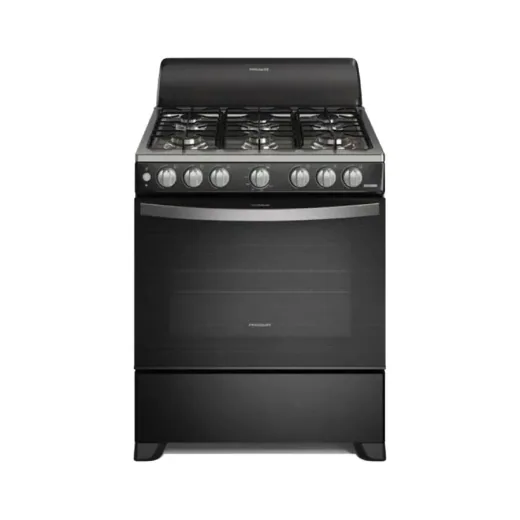
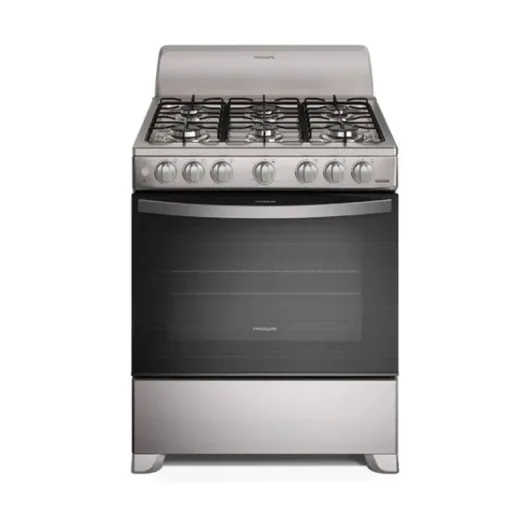
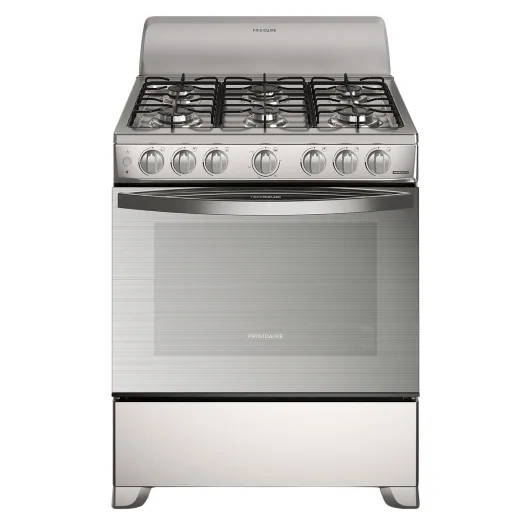
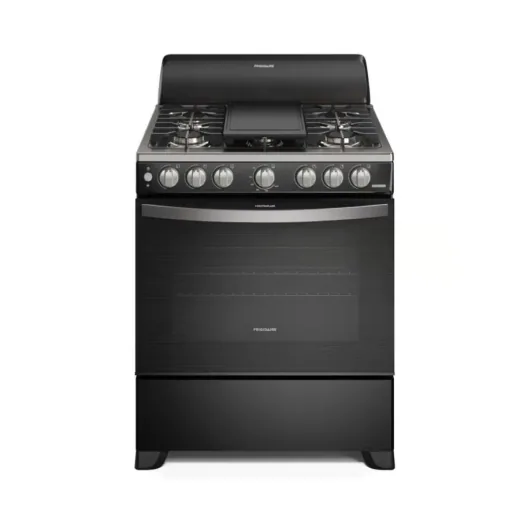
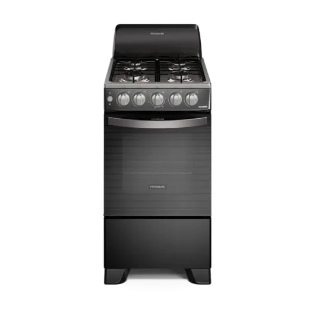

Frigidaire · Modelo FKGN30C3MYB
Estufa a Gas Frigidaire 30'' 6 Quemadore · FKGN30C3MYB
L 8,799
Más barato en Elektra · ahorras hasta L 1,200 frente a la tienda más cara
Precio en cada tienda
| Tienda | Precio | Antes | Disponibilidad | |
|---|---|---|---|---|
| Elektra | L 8,799 | Disponible | Ver en tienda › | |
| Diunsa | L 8,990 | Disponible | Ver en tienda › | |
| Lady Lee | L 9,999 | Disponible | Ver en tienda › |
Precios referenciales tomados de cada tienda el 28 de noviembre de 2026. El precio válido es el que muestra la tienda al comprar.
Historial de precio
Lo seguimos desde el 1 de noviembre. Precio más bajo registrado: L 8,799 en Elektra (19 de noviembre), igual que hoy. Cambios de precio registrados: 3.
Características
| Tamaño | 30 Pulgadas |
|---|---|
| Bono | 1000 |
| Marca | Frigidaire |
| Modelo | Estufa a Gas 30” 6 Quemadores Negra |
| Referencia | FKGN30C3MYB |
| Categoría | Estufas |
| Dimensiones | 900 mm (Alto) x 760 mm (Ancho) x 680 mm (Profundidad) |
| Peso | 35 kg |
| Color | Negro |
| Capacidad del horno | 105 L |
| Número de quemadores | 6 |
| Encendido automático | Sí |
| Función autolimpieza | No |
| Botones extraíbles | Sí |
| Vidrio interior extraíble | Sí |
| Tipo de estufa | Gas (LP o Natural) |
Descripción
Estufa a Gas Frigidaire 30” Negra FKGN30C3MYB, diseñada para ofrecer potencia, capacidad y estilo en tu cocina.
6 quemadores que brindan versatilidad para preparar múltiples platillos al mismo tiempo.
Horno de gran capacidad de 105 litros, ideal para recetas familiares.
Encendido automático para mayor comodidad y seguridad.
Botones extraíbles que facilitan la limpieza.
Vidrio interior extraíble para un mantenimiento más sencillo.
Panel mecánico de fácil uso.
Diseño elegante en color negro que combina con cualquier cocina.
Otros estufas Frigidaire
 Estufa a Gas 24" de 4 Quemadores Acero Inoxidable · Frigidaire · Modelo Fkgn24C3MYIL 8,999En Lady Lee
Estufa a Gas 24" de 4 Quemadores Acero Inoxidable · Frigidaire · Modelo Fkgn24C3MYIL 8,999En Lady Lee
Estufa a Gas Frigidaire 30 Pulgadas · Alta Calidad · FKGN30C3MYGL 7,890En 3 tiendas · más barato en Diunsa
Estufa de Gas Frigidaire 30 Pulgadas 6 Quemadores FKGN30C3MYIL 9,995En Gallo más Gallo
Estufa a Gas Frigidaire 30'' 6 Quemadore · FKGN30C3FYBL 10,990En 2 tiendas · más barato en Diunsa Estufa de Gas Frigidaire 20 Pulgadas 4 Quemadores FKGN20C3MYIL 5,995En Gallo más Gallo
Estufa de Gas Frigidaire 20 Pulgadas 4 Quemadores FKGN20C3MYIL 5,995En Gallo más Gallo Estufa de Gas Frigidaire 30P FKGN30C3YIL 12,399En Elektra
Estufa de Gas Frigidaire 30P FKGN30C3YIL 12,399En Elektra Estufa a Gas Frigidaire 20" 4QUEM Plate. · FKGN20C3MYGL 5,090En 3 tiendas · más barato en Diunsa
Estufa a Gas Frigidaire 20" 4QUEM Plate. · FKGN20C3MYGL 5,090En 3 tiendas · más barato en Diunsa
Estufa a Gas Frigidaire 20'' 4QUEMADORES · FKGN20C3MYBL 4,990En 3 tiendas · más barato en Diunsa